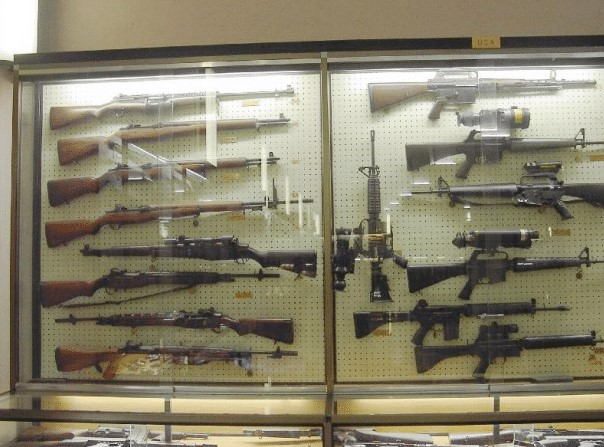

Produzione Armi
Menu
Home
Impostazioni
Lista
Armi prodotte dalla fabbrica d'armi di Terni
EN

Polo di Mantenimento delle Armi Leggere (PMAL), già S.M.A.L (Stabilimento Militare Armamento Leggero), ha il compito di assicurare l’efficienza di materiali, mezzi e equipaggiamenti in dotazione alle Forze Armate e ai Corpi Armati dello Stato con particolare riferimento alle armi leggere (sia individuali che di squadra), alle protezioni balistiche individuali e veicolari, agli strumenti verificatori ed alle attrezzature balistiche in genere.